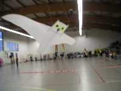
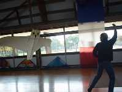
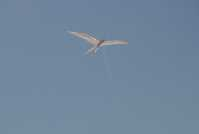
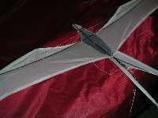

| Accueil | Jonathan | Autres pilotables | Oiseau Bleu | Harfang, Sterne | Oiseau Light | P |
Le Harfang, comme chacun sait, est une chouette arctique pratiquement blanche (que j'ai découverte d'abord dans "Les Indes Noires" de Jules Verne). J'ai d'abord cru que c'était un hibou, aussi il a des oreilles et j'en parle au masculin. Le mien a été conçu pour le vol de nuit avec comme impératifs : blanc pour être bien vu, et léger car le vent la nuit est souvent limite.
 
Pour des détails et le plan, lisez l'article
"Le Harfang".

La Sterne a été un essai dérivé des deltas monofils : le longeron externe devait être libre et trouver sa place sous les efforts aérodynamiques. Mais je le voulais courbe par souci "bio". C'était en fait un peu contradictoire car pour courber il faut tendre et le longeron n'est plus libre. J'ai dû rigidifier le tout par des tendeurs allant vers le nez. Je comptais un peu sur la queue très longue pour stabiliser le total.
En final, la Sterne ne vole pas mal, mais la symétrie est difficile à obtenir. Curieusement, elle n'est stable qu'avec un angle très fort. Je suppose que la queue n'est efficace qu'avec une forte incidence et que les lobes dont le creusement engendre une dérive centrale doivent être bien formés.